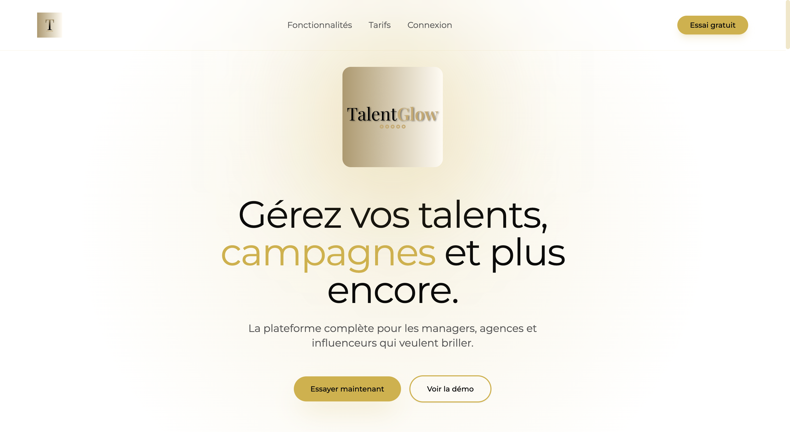
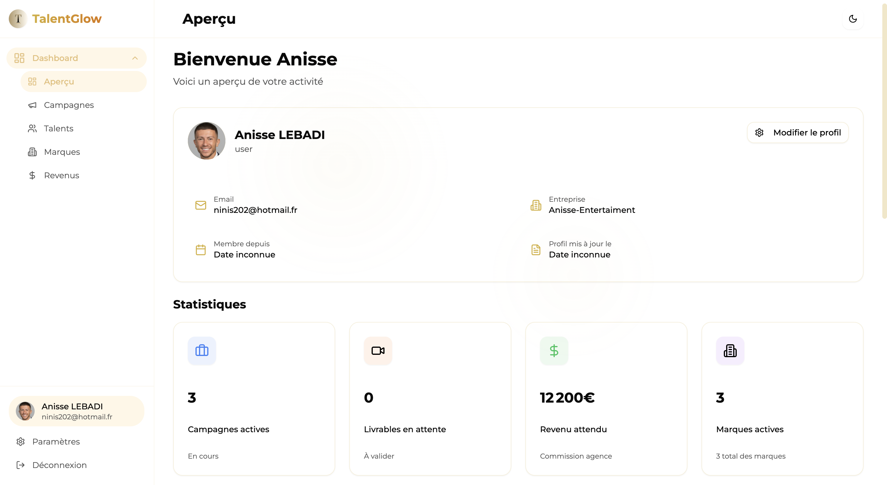
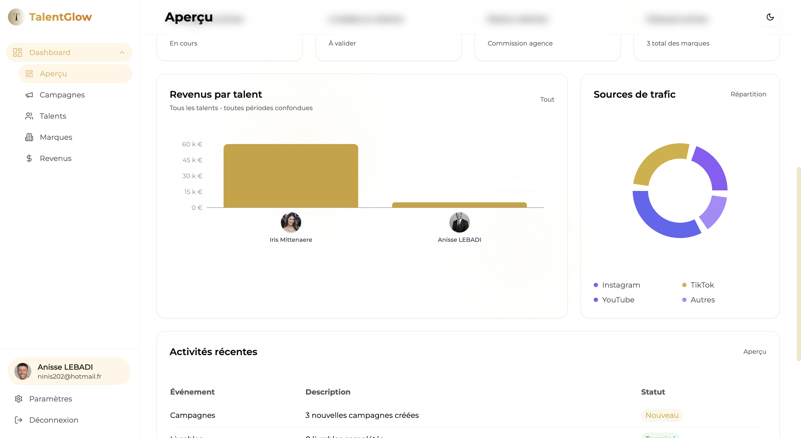

TalentGlowV2
Plateforme moderne de gestion et mise en relation entre marques et talents (influenceurs, créateurs, etc.).



Fonctionnalités principales
- Gestion des campagnes marketing pour les marques
- Sélection et mise en relation avec des talents adaptés
- Suivi des performances et reporting
- Centralisation des échanges et documents
- Inscription et gestion de profil pour les talents
- Collaboration sur les campagnes
- Gestion administrative simplifiée
- Authentification sécurisée
- Gestion de fichiers (photos, documents) via Multer
- Interface d’administration complète
Stack technique
Architecture
TalentGlowV2 est structurée en frontend (React + TypeScript, Vite, Tailwind CSS) et backend (Node.js + Express, MongoDB). Le backend gère les entités (talents, marques, campagnes, utilisateurs) avec des modèles, contrôleurs, middlewares et routes pour une API REST complète. La gestion des fichiers est assurée par Multer. La documentation technique est disponible dans le dossier docs du projet.
Défis et points forts
- Gestion avancée des rôles et permissions
- Interface responsive et moderne
- Optimisation des performances (Vite, Tailwind)
- API REST robuste et sécurisée
- Documentation claire pour l’intégration et le déploiement